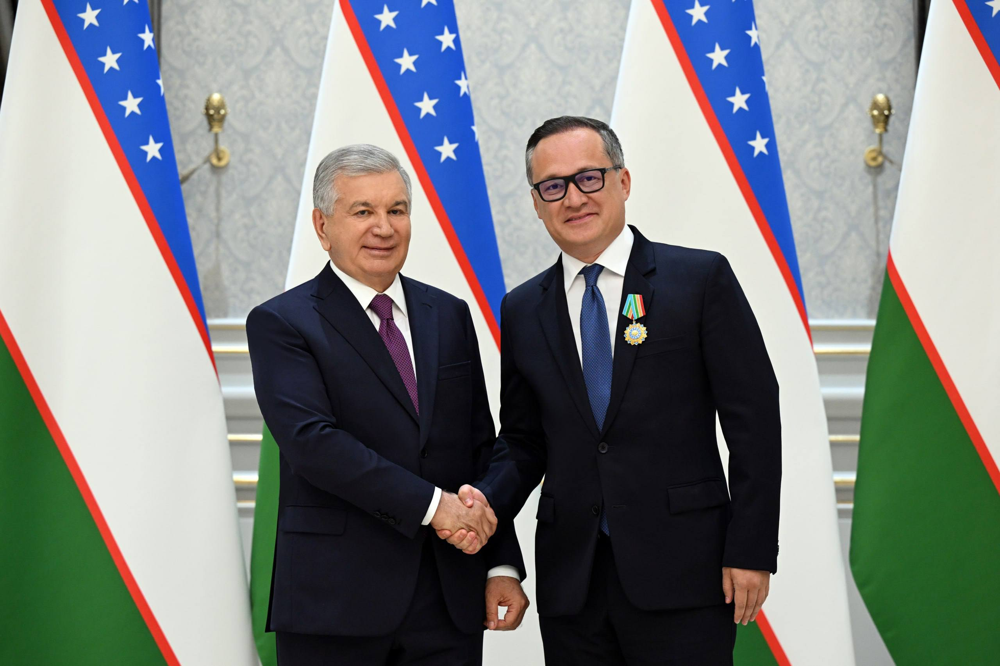

Uzbekistan explores joint energy and infrastructure projects with Chinese companies
At the first session of the fuel-and-energy Investors Council in Tashkent on 16 October, President Shavkat Mirziyoyev met executives of CAMCE, China Energy and Sinoma and backed proposals for a logistics hub in Andijan, agrivoltaics and oil-and-gas projects.

Uzbekistan is exploring joint projects with leading Chinese companies in the energy and infrastructure sectors. On 16 October in Tashkent, at the first session of the Investors Council for the fuel and energy sector, President Shavkat Mirziyoyev met executives of CAMCE, China Energy (China Energy Engineering Group) and Sinoma Energy.
Areas discussed
The sides reviewed cooperation in renewable power generation, energy storage, waste processing and water supply. The president supported the Chinese companies' proposals to build a logistics hub in the Andijan region, develop agrivoltaics (combining agriculture with solar power) and pursue oil and gas projects.
About the companies
CAMCE (China CAMC Engineering), part of the Chinese machinery corporation SINOMACH, is already involved in a waste-to-energy project in Andijan. China Energy operates in more than 140 countries and regions. Sinoma Energy specialises in clean energy — waste-heat recovery, biomass and geothermal power.

Agreements at the council
At the same session, Uzbekistan signed agreements on six major energy projects worth a combined $4.7 billion, expected to add 3,000 MW of generating capacity and 400 MW of storage. Partners include ACWA Power (Saudi Arabia), EDF (France), Toyota Tsusho (Japan), AMEA Power (UAE) and others. A further 2,200 MW of solar and wind projects will soon go to open tender.
Targets to 2030
The president said the country aims to add 22,000 MW of new capacity, 4.5 GW of storage, 5,000 km of new power lines and 16 major substations by 2030, raising the renewables share to 54%. Over the past decade, $35 billion has been attracted to the sector.
The president's remark
Shavkat Mirziyoyev stressed that generation, transmission and storage must operate as one system: 'We need an integrated energy system, not isolated power plants.'